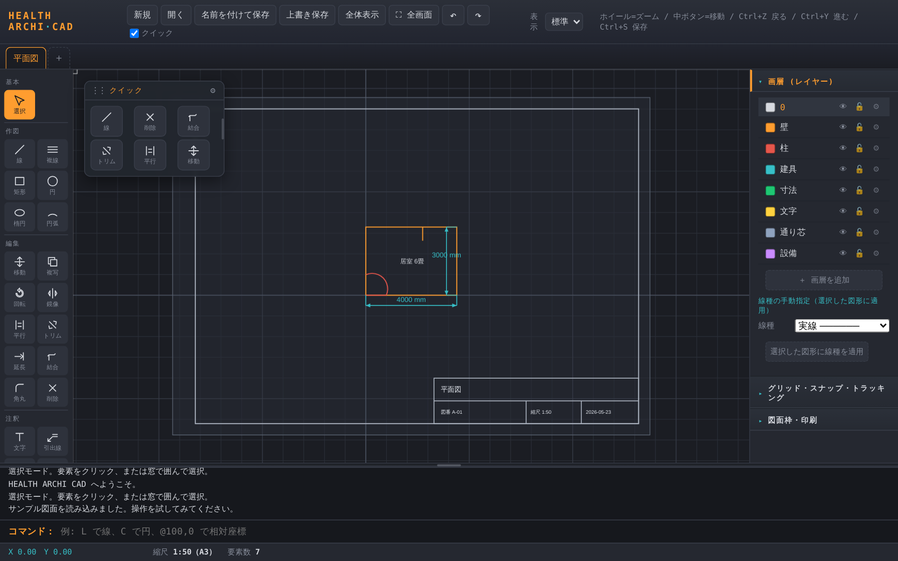
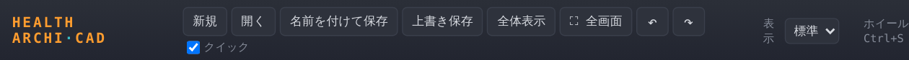
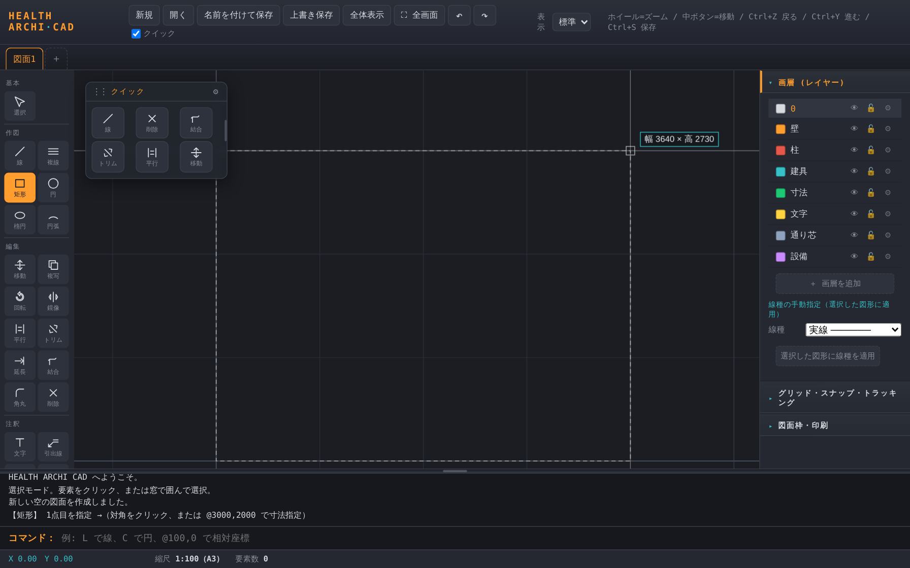
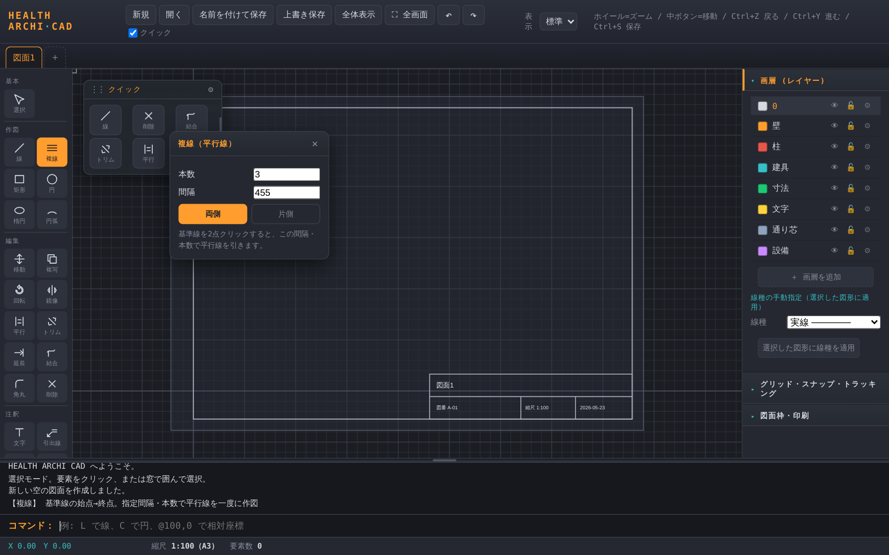
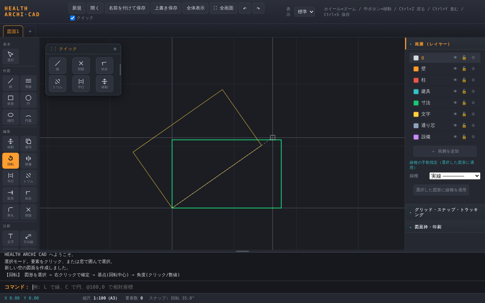
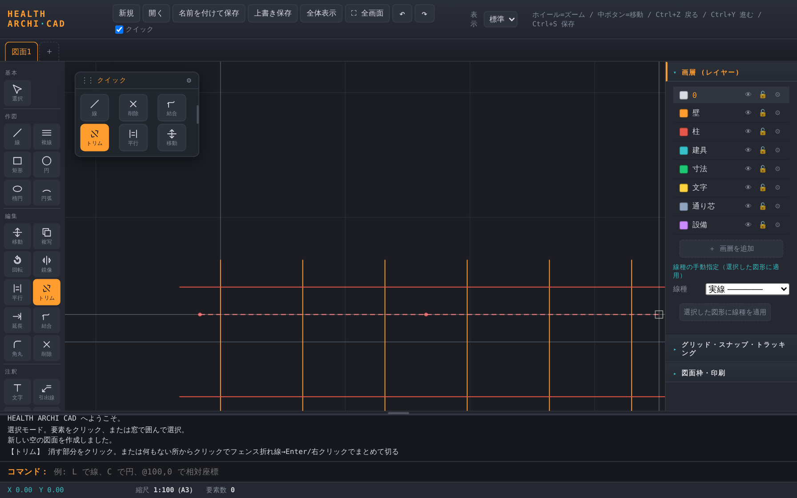
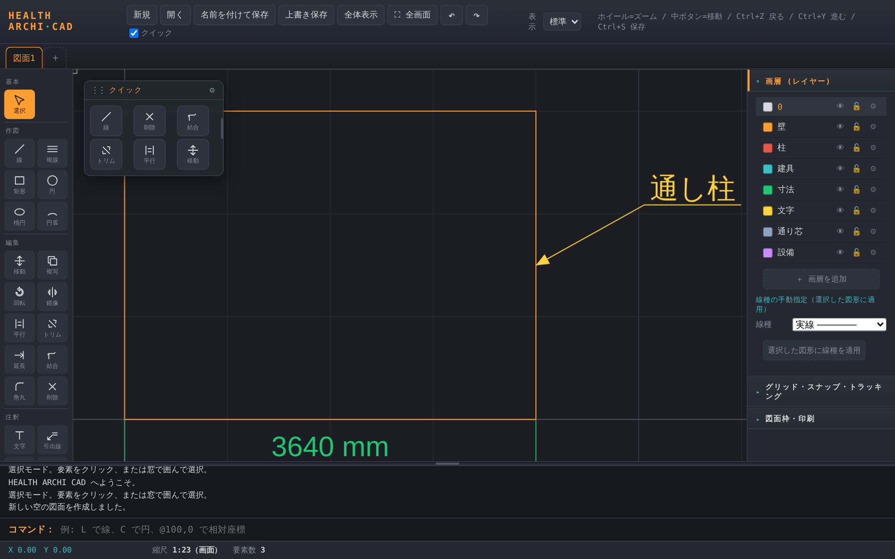
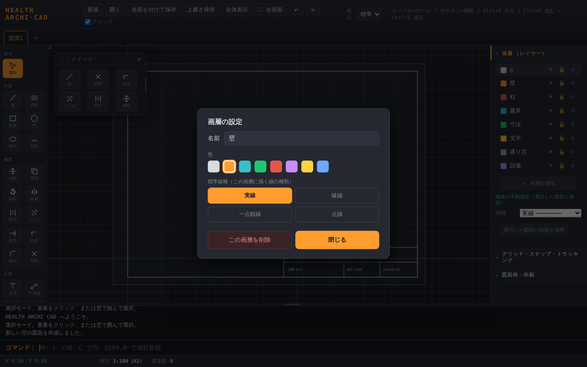
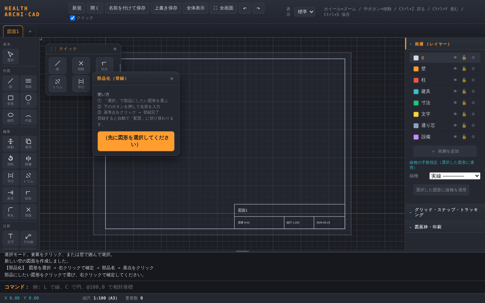
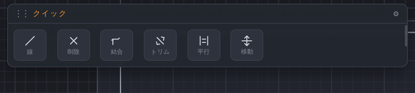

本ガイドは、すでに何らかのCADを使ったことがある方向けに、HEALTH ARCHI CAD 特有の操作とクセだけを要点でまとめたものです。一般的なCADの基礎概念は省いています。「最初の一歩」と「作図ツール全部」を重点的に解説します。
起動するとスタート画面が出ます。新規／DXFを開く／サンプル図面から選べます。まずはサンプルで操作感を掴むのが早道です。

操作思想はAutoCAD準拠です。ホイールでズーム、中ボタンドラッグでパン。ただしブラウザCADゆえの違いがいくつかあります。
基本／作図／編集／注釈／部品にグループ分け。クリックでツール選択。AutoCADのリボン相当。
よく使うツールだけ集めた浮動パレット。右端をドラッグで幅変更、広げると横一列に。⚙で表示ツールを編集。上メニューの☑で表示/非表示。
レイヤー一覧と線種設定。各行の⚙から設定画面。下に「グリッド・スナップ・トラッキング」「図面枠・印刷」を格納。
操作の案内と履歴。上端をドラッグで高さ変更。その下がコマンド入力欄。

クリックで単体選択。範囲選択はドラッグに加えて2点クリックでも可能です（1点目クリック→2点目クリック）。左→右＝窓選択（完全に囲んだものだけ）、右→左＝交差選択（線に触れたもの全部）。色で区別表示されます。選択解除は Esc。
右パネル「グリッド・スナップ・トラッキング」のチップで切替。
| 機能 | 内容 |
|---|---|
| グリッド | グリッド交点に吸着。間隔は木造用プリセット（1000/910/455/227.5mm）から選択、独自値も登録可。 |
| スナップ | 端点・中点・中心・交点・垂線・近接・四半円点などのオブジェクトスナップ。 |
| 直交 | 水平・垂直拘束（F8でも切替）。 |
| トラッキング | 角度ガイド。カーソルが角度線に近づくと吸着。グリッド×角度線の交点にも乗ります。 |
| 入力 | 意味 |
|---|---|
| 100,200 | 絶対座標 (X=100, Y=200) |
| @300,0 | 相対座標（直前の点から） |
| @1000<45 | 極座標（距離1000・角度45°） |
| 500 | 方向を示してから距離だけ入力（線）／円の半径 |
「作図」グループのツールです。各ツールは選択するとコマンドログに手順が出ます。
始点→終点。連続クリックで折れ線的に続けられます。方向を示して数値入力で正確な長さ。
1点目→対角。または1点目のあと @3000,2000 で寸法指定。
中心→半径（クリック or 数値）。
中心→もう1点。または @2000,1000 で横半径・縦半径を指定。
通過3点で円弧を作図。
基準線を2点指定すると、設定した本数・間隔で平行線を一度に作図。壁の作図に。


このアプリの最重要のクセです。AutoCADの「コマンド→対象選択→Enterで確定→基点」と同じ流れになっています。

図形を直接クリックすれば1本ずつ処理。何もない所からクリックすると「フェンス」が始まり、折れ線を引いて Enter または右クリックで、横切った図形をまとめて切る／延ばすことができます。

距離を指定して平行コピー。距離はコマンド欄に数値で。
2本の線をクリック → 交点まで延長/トリムして角で結合（フィレット半径0相当）。
2本の線を丸める。または矩形・連続線の角を直接クリックして丸める（半径を先に数値入力）。
クリック or 範囲で選択して削除。Deleteキーでも。
文字・寸法ツールを選ぶと設定ポップアップが開きます。「自動」チェックがオンのときは、用紙・縮尺から木造図面で見やすい高さ（紙面で約2.75mm／2.5mm）を自動計算し、図面枠を変えると追従します。オフにすると手動入力できます。
寸法を連続して入れるとき、既存の寸法線の高さに吸着します（「寸法ライン（高さ揃え）」と表示）。ラインがバラつきません。手順は 2点 → 寸法線の位置、の順。
注釈グループの引出線。1点目＝矢印の先端、2点目＝文字の始まり（折れ点）の順にクリックすると、矢印付きの引出線と下線付きの文字ができます。文字内容・サイズは文字ポップアップの設定を使います。

閉じた図形（矩形・円・閉じた連続線）の内側をクリックで塗る。斜線/クロス/ソリッドと間隔を設定。
2点間の距離を測る。作図はしません。
初期画層：0 / 壁 / 柱 / 建具 / 寸法 / 文字 / 通り芯 / 設備。通り芯は初期で一点鎖線に設定済みです。
レイヤー行はスッキリ表示（色・名前・表示👁・ロック🔒・⚙）。⚙をクリックすると設定画面が開き、名前・色・標準線種・削除をまとめて行えます。

繰り返し使う図形（建具・設備など）を部品として登録し、何度でも配置できます。既製ライブラリはなく、自分で描いたものを登録する方式です。

「配置」ツールでポップアップの一覧から部品を選び、置きたい位置をクリック。等倍・無回転で配置します。向きを変えたいときは、配置後に回転コマンドを使ってください（縮尺・回転の入力欄はありません）。
右パネル下の「図面枠・印刷」で、用紙サイズ・向き・縮尺・タイトルブロックを設定し、PDF印刷します。
| 操作 | 内容 |
|---|---|
| 名前を付けて保存 | DXF（R12/AC1009）で書き出し。線種・画層・色も保持。 |
| 上書き保存 Ctrl+S | 同じファイルに保存（Chrome/Edge）。 |
| 開く Ctrl+O | DXFを新しいタブで開く（現在の図面は保持）。 |
| キー | 動作 | キー | 動作 |
|---|---|---|---|
| Ctrl+Z | 元に戻す | Ctrl+S | 保存 |
| Ctrl+Y | やり直し | Ctrl+O | 開く |
| F8 | 直交モード切替 | Delete | 選択を削除 |
| Enter | フェンス確定など | Esc | コマンド中止・選択解除 |
| ホイール | ズーム | 中ボタンドラッグ | パン（移動） |
| キー | ツール | キー | ツール | キー | ツール |
|---|---|---|---|---|---|
| L | 線 | REC | 矩形 | C | 円 |
| EL | 楕円 | A | 円弧 | ML | 複線 |
| M | 移動 | CO | 複写 | RO | 回転 |
| MI | 鏡像 | O | 平行 | TR | トリム |
| EX | 延長 | CN | 結合 | F | 角丸 |
| E | 削除 | T | 文字 | LD | 引出線 |
| DIM | 寸法 | H | 塗り | DI | 計測 |
| B | 部品化 | I | 配置 |

HEALTH ARCHIは「建設業に携わる人が、本来の仕事に戻る」をテーマに、
一級建築士・建設業17年の実務経験から生まれたツールとAI活用ノウハウを公開しています。
新しい無料ツールも、LINE登録で公開のたびにお知らせします。
HEALTH ARCHIは、工務店社長向けに会社専用AI経営パートナー「ISHIZUE」を構築する建設業特化型DX事業を運営しています。
一級建築士・設計現場監督17年実務／書籍「社長が現場を降りる日」（Amazon販売中）。